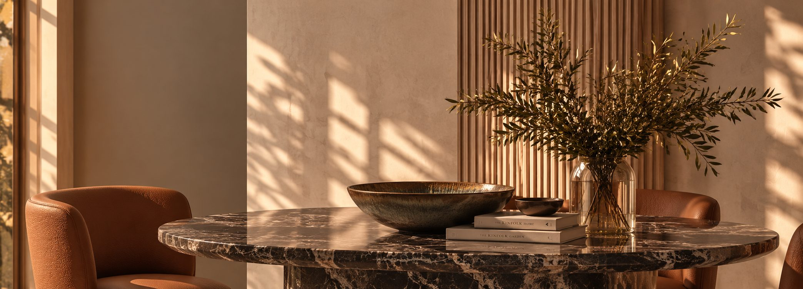

Ein Raum, der
niemandem gleicht
außer Ihnen.
Es geht nicht nur um schöne Interieurs…
Es sind Räume, die nie fremd wirken.
Ein Zuhause ist kein Showroom. Es ist ein Ort, an dem jedes Objekt von dem erzählt, der dort lebt, und an dem jedes Detail ganz selbstverständlich seinen Platz findet.
Wie ein Kleid, das für eine Silhouette geschneidert ist: Alles ist durchdacht, angepasst, mit Bedacht gewählt.
Das ist wahre Maßarbeit.

-
01
Der Raum
Stimmige Proportionen, eine Architektur, die Epochen überdauert, Klassiker, die nicht altern. Materialien und Objekte, die Patina ansetzen, sich wandeln und mit der Zeit an Schönheit gewinnen.
-
02
Das Material
Das Material verleiht dem Projekt Tiefe. Stein, Holz, Metall, Textil, Licht — jedes Element trägt zur Atmosphäre bei.
-
03
Die Präzision
Eine Ästhetik, bis ins kleinste Detail durchdacht — bis hin zur Umsetzung.

Der Mensch Der Sinn Der Raum
Wahrer Luxus ist ein Interieur, das nicht beeindrucken will. Es scheint schon immer für den da gewesen zu sein, der darin lebt.